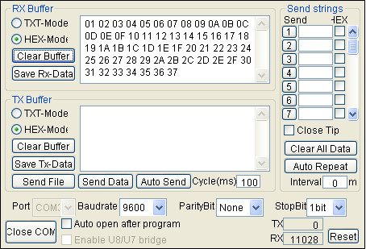

Steward
分享是一種喜悅、更是一種幸福
微處理器 - Microchip PIC10F200 - Assembly - UART TX(9600bps)
由於PIC10F200沒有UART功能，因此，司徒只好先使用I/O Toggle的方式製作UART TX，TX比較簡單，只要把時間算好，基本上沒有太大問題，唯一要注意的是，最好不要超過3%的誤差，加上PIC10F200的石英震盪器是使用內部震盪器，難免會有誤差，建議不要使用太快的UART Baudrate，目前司徒使用的UART Baudrate是9600bps，格式為N,8,1，過程說明如下
UART傳輸協定

9600bps每個bit時間為：1/9600 = 104.167us
main.s
list p=10f200, r=hex
#include <p10f200.inc>
__config _CONFIG, _IntRC_OSC & _WDTE_OFF & _MCLRE_OFF
#define tmp1 0x10
#define tmp2 0x11
#define tmp3 0x12
#define tmp4 0x13
#define UART_DELAY d'28'
#define UART_PIN 0x02
org 0x00
start:
movlw b'11000000'
option
movlw b'00000000'
movwf OSCCAL
movlw b'00001011'
tris GPIO
bsf GPIO, UART_PIN
clrf tmp4
loop:
movf tmp4, w
incf tmp4, f
call uart_send_byte
call delay
goto loop
uart_send_byte:
movwf tmp1
movlw 0x08
movwf tmp2
bcf GPIO, UART_PIN
movlw UART_DELAY
movwf tmp3
decfsz tmp3, f
goto $-1
u0:
rrf tmp1, f
btfss STATUS, C
bcf GPIO, UART_PIN
btfsc STATUS, C
bsf GPIO, UART_PIN
movlw UART_DELAY
movwf tmp3
decfsz tmp3, f
goto $-1
decfsz tmp2, f
goto u0
bsf GPIO, UART_PIN
movlw UART_DELAY
movwf tmp3
nop
decfsz tmp3, f
goto $-1
return
delay:
movlw 0xff
movwf tmp2
movlw 0xff
movwf tmp1
decfsz tmp1, f
goto $-1
decfsz tmp2, f
goto $-3
return
end
編譯
$ gpasm main.s
完成
